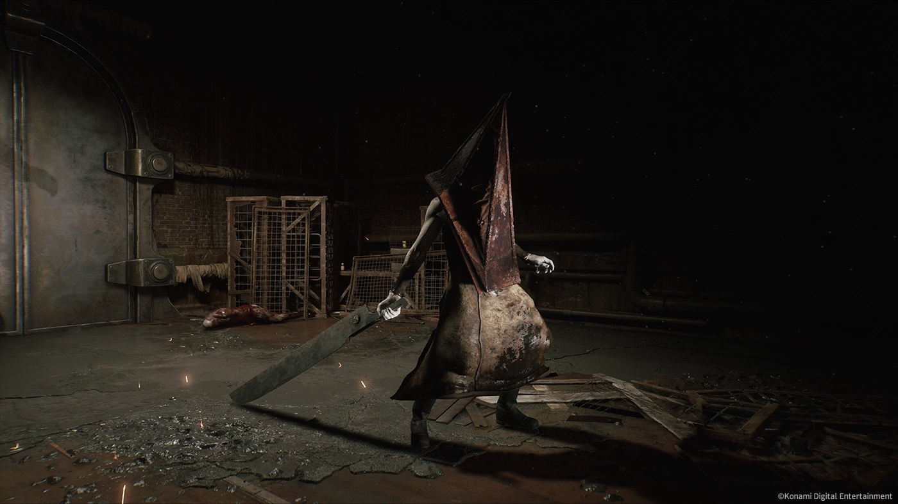

James Sunderland
El protagonista principal de Silent Hill 2, James, es un hombre atormentado por la muerte de su esposa Mary.
Recibe una carta misteriosa de ella, que lo lleva de vuelta al pueblo de Silent Hill.
A lo largo del juego, James se enfrenta a sus propios demonios, tratando de descubrir la verdad detrás de la muerte de Mary.
Maria

Maria es una mujer que James conoce en Silent Hill. Ella se parece mucho a su esposa muerta, Mary, pero tiene una personalidad muy diferente.
A lo largo del juego, Maria es un símbolo de la culpa y el deseo de James, y su presencia en Silent Hill no es una coincidencia.
Pyramid Head
Pyramid Head es una criatura monstruosa y uno de los enemigos más famoso de Silent Hill.
Simboliza el castigo y la culpa de James, y aparece en momentos clave para perseguir y torturarlo.